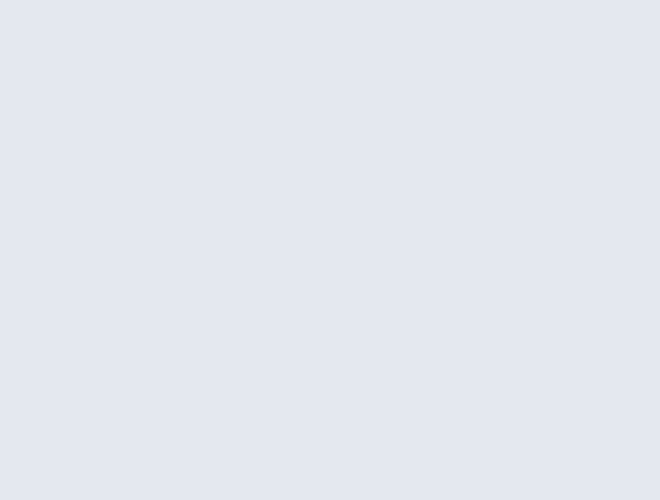

菜单栏以进度环直观展示近 5 小时剩余额度，颜色随余量变化：绿 ≥50%、橙 20–50%、红 <20%。
点击弹出详情：5h 大圆环主视觉 + 周/月统计，三个窗口的已用/剩余进度条与下次重置时间。
支持多个账户同时配置，顶部选择器或账户列表一键切换当前使用账户，切换即刷新并记住选择。
左键打开详情面板，右键呼出「刷新 / 管理账户 / 退出」快捷菜单，符合 macOS 使用习惯。
AK/SK 仅保存在本机，直接请求火山引擎官方管控面 API，不上传任何第三方服务器。
每 60 秒自动同步额度，接近用尽时进度条与指示环自动变红提醒。

前往 GitHub Releases 下载最新的 CodingBalance-macOS-*.zip，解压后把 CodingBalance.app 拖入「应用程序」。
应用为开发者自签名，首次打开需在「系统设置 → 隐私与安全性」中允许，或右键应用 → 打开。之后菜单栏右上角出现齿轮图标 ⚙。
点击齿轮 → 添加账户 → 填入火山引擎 Access Key ID / Secret Access Key → 「测试连接」通过后保存，菜单栏即刻显示额度。
git clone 后执行 cd macos && ./make_app.sh（需 Swift 工具链，macOS 自带或 Xcode 提供）。
Access Key ID 与 Secret Access Key（Secret 仅显示一次，请立即保存）。ark:GetCodingPlanUsage 等方舟权限；主账号密钥亦可用。ark:GetCodingPlanUsage 权限。GetCodingPlanUsage / GetAFPUsage），与控制台 1:1。完整记录见 CHANGELOG.md 与 GitHub Releases。